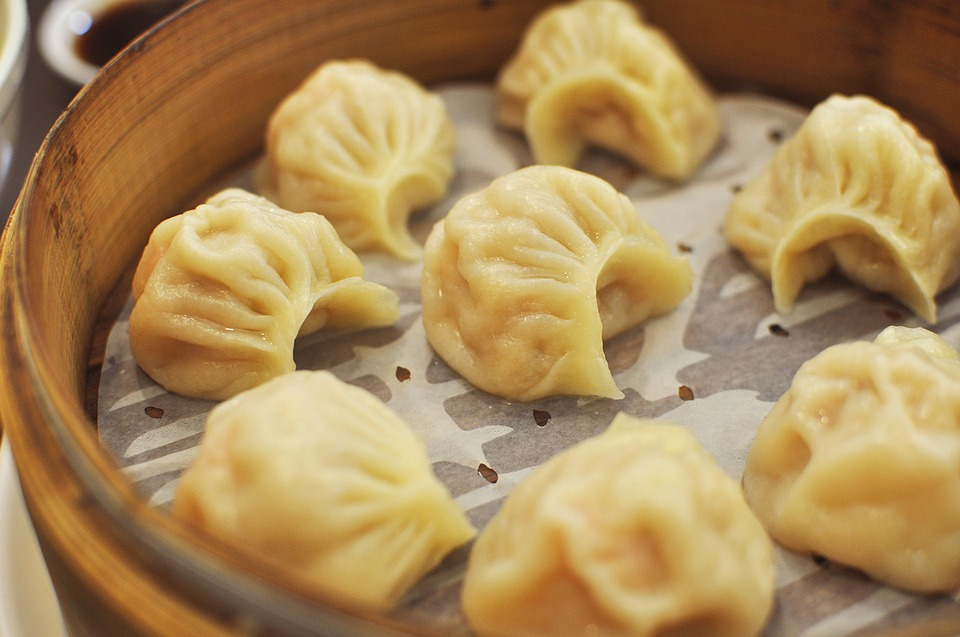
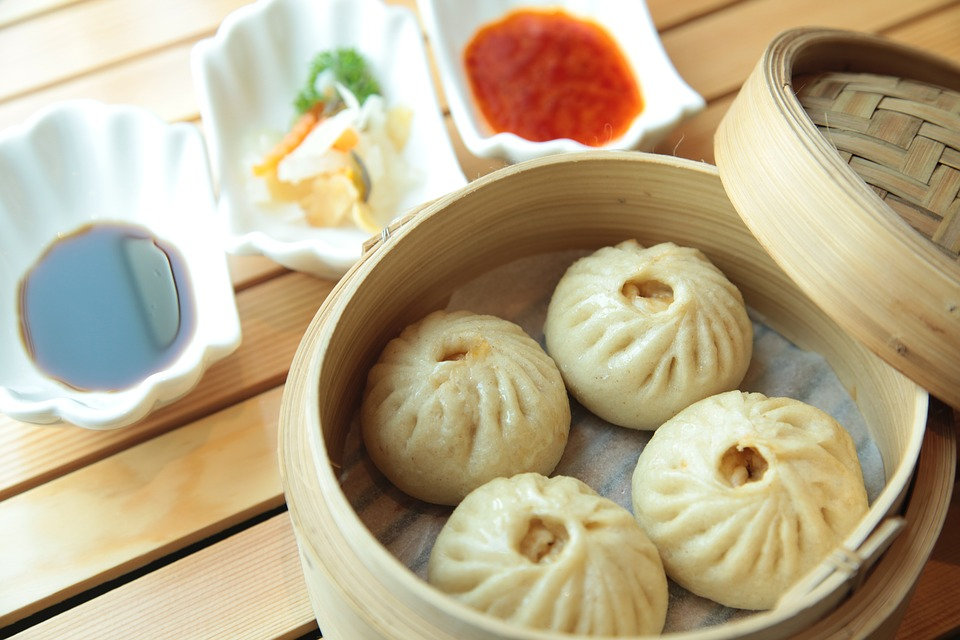

Chicken Momos



Description:
Momos are a types of dumplings which can either be steamed or fried. This delicious appetizer is native to the Himalayas of Nepal and popularly eaten as a street snack.
Ingredients of Chicken Momos
- 500 gms Chicken, Minced
- 200 gms Cabbage
- 100 gms Carrot
- 3-4 Cloves of fresh garlic
- 2 tsp Soya Sauce
- Salt to taste
- Wontons ready made coverings
- Sooking oil 1 tsp
- One streamer
- Chilli sauce (For Serving)
Steps To Make Chicken Momos
- Grind all the on top of ingredients in a liquidiser till it attains a granular consistency paste.
- On a board, sprinkle some water so the board could be a bit damp, currently lay down the wonton coverings one by one and place tiny teaspoon of the on top of paste on all severally.
- Close every covering in a very spherical or semi circle form as you prefer.
- Spray little bit of vegetable oil on the steamer's surface and lay down the dumplings.
- Allow it to steam for 7-10 minutes. Serve it with hot pepper oil or hot pepper sauce as you wish.